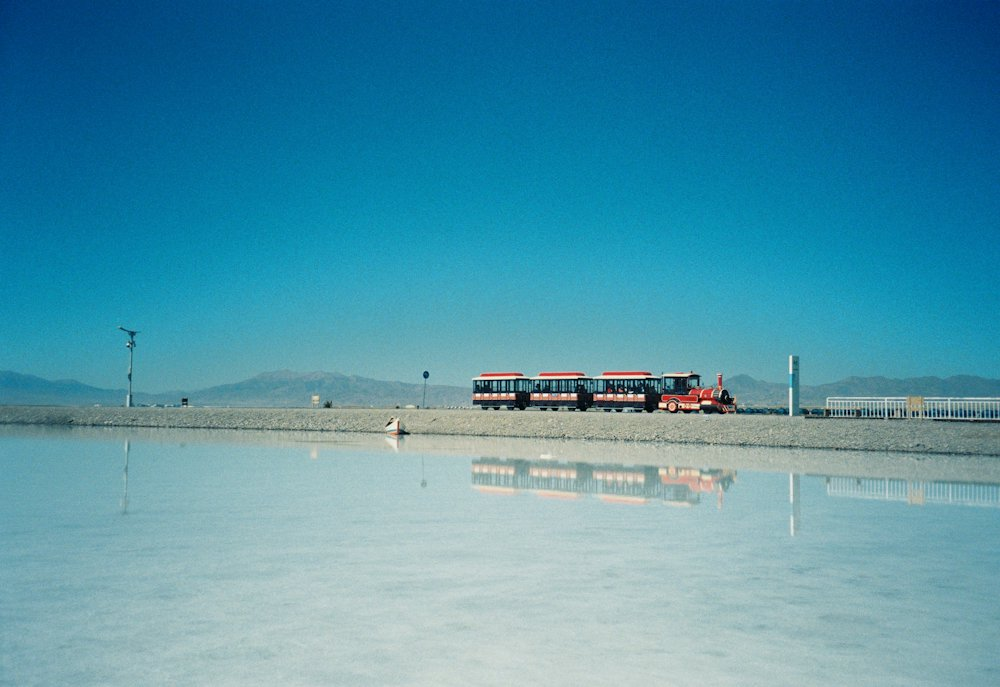

自然历年规律西北
茶卡盐湖天空之镜
Chaka Salt Lake · 青海 · 乌兰
最佳时间
6 – 9 月；无风的清晨与傍晚镜面效果最佳
「天空之镜」依赖浅水+无风+晴天，正午光线过强反而不利倒影。
中国的天空之镜：浅水盐滩把云与雪山复制成双，红裙白裙是这里的标准制服。
不能错过
- 清晨入场风小镜面稳，人少光柔
- 小火车轨道与盐雕群是经典机位
当地美食
茶卡羊肉盐湖边牧区羊， mineral 草场喂养
青海老酸奶厚奶皮固型酸奶，撒糖吃
糌粑高原主食，景区藏族家访体验
尕面片青海人随身面食，汤干两吃
参考：Chaka Salt Lake — Wikipedia ↗ · 【茶卡盐湖】美食住宿全攻略:老酸奶手抓羊肉与茶卡镇住宿选择 宁夏青海攻略 游记攻略 _西安康辉旅行社官网 ↗ · 青海湖旅游攻略之美食推荐|酸奶|羊肉|环湖|高原|青稞_新浪新闻 ↗ · 青海湖自驾4天环线,沿途美食值得专门吃吗?3类必吃清单+打卡路线+FAQ|酸奶|羊肉|西宁|锅|硬菜_新浪新闻 ↗ · 茶卡盐湖景区美食推荐来了! - 百度知道 ↗ · 茶卡盐湖附近住宿预订全攻略:从10元小吃到人均80元手抓羊肉,住哪里吃得好?+FAQ|茶卡镇|海西蒙古族藏族自治州|快餐|打卡|景区_新浪新 ↗ · 茶卡盐湖一日游攻略|带你玩转“天空之境” ↗
旅人提醒
- 盐面反光极强，墨镜与防晒必备
- 盐水腐蚀鞋袜，租雨靴或走栈道
月度热力与气温
-6°
1
-3°
2
4°
3
11°
4
16°
5
20°
6
22°
7
21°
8
17°
9
11°
10
2°
11
-5°
12
适宜度（柱高，5=最佳）依据活动窗口与气候整理；气温为月均高温近似值（°C），仅供规划参考，出行前请查当地预报。
编辑核实笔记 · 整理自乌兰县与景区公开资料，非亲历；以景区公告为准。
预订 / 官网
官方页面：查看官网 / 官方信息 ↗ · 票价与预约以官网为准
联盟链接含占位 tracking id（Booking/Klook/Trip.com），上线替换为真实 ID 即生效；均带 utm 参数与点击统计。